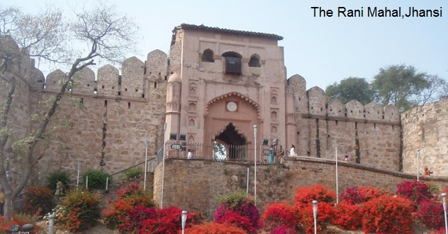

MY BUNDELKHAND
what's new
Bundelkhand is a geographical and cultural region and also a mountain range in central India.
The hilly region is now divided between the states of Uttar Pradesh and Madhya Pradesh,
with the larger portion lying in the latter state.The Khangar ruled areas of present-day Bundelkhand after the fall of the Chandelas in 1182 A.D. and until the mid-14th century. Their seat of power was at Garh Kundar, a fort built by Khub Singh Khangar. During the Khangar rule, Bundelkhand was known as Jujhauti, implying the land of warriors. The name of the region derives from the Bundela Rajputs,
who succeeded the Chandel Rajputs as rulers of the region in the 16th century.
Jhansi is the largest city in Bundelkhand and is a major cultural, educational, transport and economic hub. Other major towns of Bundelkhand are Kalpi, Chirgaon, Datia, Dabra, Mauranipur, Panna, Banda, Chitrakoot, Datia, Tikamgarh, Rath, Lalitpur, Sagar, Damoh,
Jalaun, Orai, Hamirpur, Mahoba, Banda, Ashoknagar, and Chhatarpur.
Among the well-known places of Bundelkhand is Khajuraho, which has numerous 10th-century sculptures devoted to fine living and eroticism. The mines of Panna have been the source of magnificent diamonds;
a very large one dug from the last active mine was kept for a time in the fort of Kalinjar.

